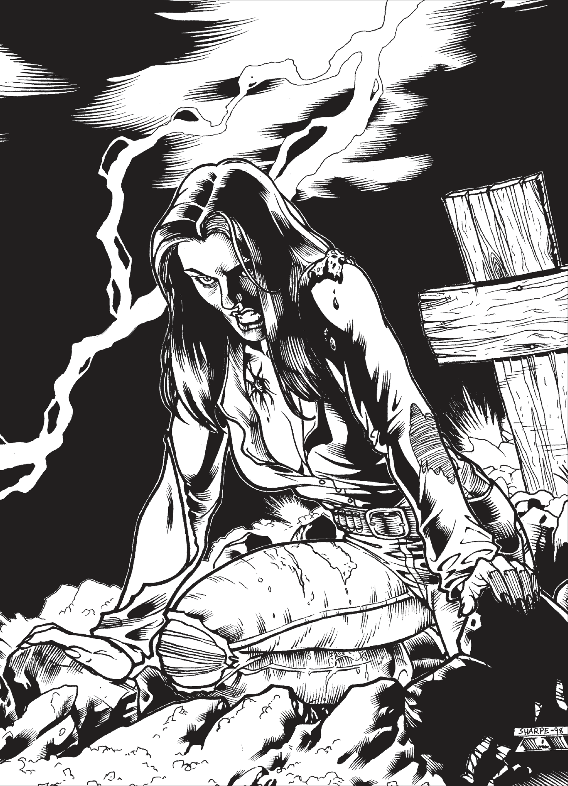

There's nothing worse than a gunfighter having to scratch a notch off his pistol. In Deadlands, however, it just might happen. You see, death isnt always the last you might hear of a really tough hombre.The Marshal should let you read this section whenever your character kicks the bucket and digs himself out of his hole.
Strong-willed individuals sometimes come back from the grave. As the Agency and Texas Rangers have learned (sometimes the hard way), these individuals are actually possessed by manitous, evil spirits who use the host's mind and body to affect the physical world. These undead are known as "Harrowed".
Whenever a character dies their body is (mostly) intact, they draw one card from a freshly shuffled deck, plus an additional card for every level of grit. If they draw either joker, they're on their way back. As a rule of thumb, most harrowed stay in the ground 1d6 days, although this can be longer or shorter depending on the condition of the body.
As mentioned earlier, the player is now sharing their body with a manitou, but they remain mostly in control. The struggle between player and manitou is represented by "dominion points", which are equal to the possessed character's Spirit die. Every morning, the contest over control is represented by an opposed Spirit roll between player and manitou, where both sides add their held number of Dominion. The winner of the contest gains one point of Dominion from the loser>
I speak from experience when I say that returning from death is downright awful. Your last memories are of your death, and then you wake up 6 feet under. Your mind is fuzzy from being inactive, and recovering from rigor mortis causes short seizures all the time. The day after coming back, all actions by the harrowed are taken at a -4 penalty. The next day is -3, and you get the idea.
Newly formed Harrowed will soon discover their new knack for healing, but the wound that caused their death will never quite heal correctly. Sometimes this manifests as a scar, sometimes a single bullet hole remains. The way this manifests is up to players and the Marshal. Additionally, most Harrowed are quite pale. Their bodies don't rot, but they typically have a nasty smell. Anyone attempting to smell a Harrowed (if that's what you're in to) can smell the decay with a Moderate (5) Cognition roll. Drinking a couple glasses or alcohol a day covers the smell a bit, increasing the TN to an Incredible (11).
In addition to all of this, Harrowed adventurers can't be poisoned, drugged, get drunk, or catch non-supernatural diseases.
Contrary to what you may think, Harrowed still need to eat. This isn't because they get hungry, although they may think they do. This is instead thanks to the manitou inside them using the meat they eat (cooked or raw) to plug the holes they get from various wounds. As long as they remain well fed, Harrowed can make healing rolls once per day instead of per week. They can even regrow lost limbs (except for the head of course). However, all this fancy stuff means that the Harrowed cannot recieve any outside healing, be it from Medicine rolls or any form of magical healing.
Harrowed also seem to have a dulled sense of pain, ignoring two levels of wound penalties per area. This stacks with any other modifiers, such as the thick-skinned edge.
Now, I mentioned earlier that Harrowed and their better (manitou) halves, fight for dominion after a night of rest. You might be thinking, "well what if I don't sleep". That's a good option, but it's not going to be easy. Typically when it's time for sleep, the manitou will just shut down the Harrowed. This can be resisted with an opposed Spirit roll. If the Harrowed wins, they get to stay up an hour past their bed time. But if the manitou wins, it's lights out. Additionally, while staying up late, the Harrowed loses 1d4 wind for every 24 hour perios they do not sleep, which does not come back until they get a good night's rest, at which point it comes back at a rate of one wind per hour of sleep.
The Harrowed first emerge from the grave with nothing special about them compared to any normal undead. After a while, however, they eventually find themselves in danger, and inadvertently tap into the powers of their manitou roommates.
There are a few ways to get these powers. One is through a procedure called "counting coup". When an incredibly strong creature dies within a few feet of a Harrowed, they gain a special power unique to that creature. This method is usually only for big singular entities, stuff like Dracula or the Headless Horseman.
Most of the time though, Harrowed powers can be bought using bounty points. It costs 10 bounty points to get a new Harrowed power from the list below, provided you have one of the recommended Edges or Hinderance. There are exceptions to this, but the final say is in the hands of the Marshal. If a newly purchased power has multiple levels, you start at level 1. Increasing the level costs twice the new level in Bounty Points. For example, raising cat eyes from level 4 to 5 costs 10 points.
The list below details descriptions of each power, as well as their Speed, Duration, and Disposition. Speed is the amount of actions it takes to activate a power. Some powers are "always on". Duration is how long a power lasts. Concentration means it must be concentrated on, so while it is used the Harrowed can only do simple tasks like moving or resisting an enemy test of will. Dispositions are the recommended Edges and Hinderances that fit best with a power.
Speed: 2
Duration: Concentration
Dispositions: Keen, "The Stare", Bad Eyes, Curious
Cat eyes grants an undead character the ability to see things others cannot. When used, the Harrowed's eyes glow slightly, as an animal's do when they catch the moonlight just right.
Harrowed characters with this power should be careful how and when they decide to use it. Sometimes the glowing side-effect can show an enemy just where to put his bullet if a Harrowed with cat eyes is trying to sneak up on him in the dark of night.
Speed: 1
Duration: As desired
Dispositions: Two-fisted, all thumbs, bloodthirsty, one-armed bandit, ugly as sin, vengeful
Saloon gals can leave vicious scratches down a fellow’s back, but that’s nothing. These claws can go right through a spine.
The character’s hands turn into cruel claws at will. The higher the level, the bigger the claws. The damage of the claws is added to the character’s Strength roll whenever she hits using fightin’: brawlin’, just like the claws were a hand-held blade.
The character can retract the claws by simply thinking about it. Keeping them out or in requires absolutely no concentration on the Harrowed’s part.
Speed: 2
Duration: Concentration (Varies)
Dispositions: Ailin', bad eyes, curious, haunted, night terrors, pacifist, thin skinned
Some people seem to have walked through life untouched by anything. Sometimes that continues even after death.
The character and any objects he wears or carries can become completely insubstantial at will. This allows him to walk through walls and ignore physical attacks. Of course, he cannot affect the physical world without materializing himself by ending his use of the power The Harrowed can be affected by supernatural attacks, like the huckster hex soul blast.
A “ghosted” undead is not invisible, however. He appears just as a solid as ever, right up until somebody tries to grab his shoulder and winds up sticking her hand straight through him.
The amount of Wind it requires to remain immaterial depends on the level of the power.
Speed: 1
Duration: Special
Dispositions: Ailin', greedy, hankerin'
Those who hungered in life— whether for power, money or simple creature comforts— can continue to hunger after death. Of course, the hunger takes a different and more sinister form.
Soul eater is one of the undead’s cruelest weapons. The Harrowed grasps her victim by the throat and squeezes as if trying to choke him. In a heartbeat, the victim’s life force is drawn from his body and consumed by the hungry undead.
A soul eating undead must first get at least one raise on an opposed fightin’: brawlin’ roll. When she does, she has the victim by the throat and can begin to drain out his life force. This is an opposed Spirit roll. The difference is the amount of Wind the Harrowed drains if successful. If he fails, nothing happens.
The Harrowed can use the stolen life force to revitalize herself in some way. As her skill in the power grows, she has more options to choose from. The amount of Wind the power steals is determined by the level of the power the Harrowed is using. Stolen Wind fades if not used immediately.
Speed: Special
Duration: Permanent
Dispositions: Thick skinned, big 'un, overconfident
Undead can heal themselves faster than ordinary folks. The manitous inside them draw supernatural energy from the air around them to stitch up their holes and keep them looking awful pretty. As pretty as a warmedover, strutting corpse can get, anyway.
Stitchin’ allows undead to regenerate their wounds even faster than the Harrowed normally can. The rate at which they do so depends on the level of the power. The time shown on the table below is how exactly often the undead with this power can attempt a healing roll.
Speed: Always on
Duration: Permanent
Dispositions: Any
A gunslinger with supernatural Quickness is deadlier than a Gatling gun. A mad scientist with paranormal Smarts can make an awful lot of Gatling guns, however.
This power raises any one Trait (chosen when the power is awarded or purchased) by one step per level. The power is tied to a particular Trait, though a character can have multiple supernatural traits.
The trait raised should somehow reflect the character’s personality or past. A gunslinger might gain supernatural Quickness, for instance.